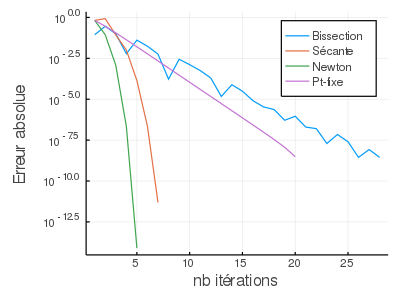

Résolution de problèmes non-linéaires
Cette section est dédiée à la résolution de problèmes non-linéaires. Deux types de problèmes non-linéaires sont étudiés, le premier est le problème de recherche de racines $r \in \mathbb{R}^n$ de $F:\mathbb{R}^n \to \mathbb{R}^n$:
$F(r) = 0$.
Les algorithmes disponibles pour trouver les racines d'une fonction $F$ sont:
- Bissection pour $n=1$ :
bissec, - Sécante pour $n=1$ :
secante, - Newton avec dérivée pour $n=1$ :
newton1D, - Newton avec dérivée pour $n\geq 1$ :
newtonNDder, - Newton sans dérivée pour $n\geq 1$ :
newtonND.
Le deuxième type de problème à résoudre est le problème de recherche d'un point fixe $z \in \mathbb{R}^n$ d'une fonction $G:\mathbb{R}^n \to \mathbb{R}^n$:
$G(z) = z$.
L'algorithme disponible pour trouver les points-fixes d'une fonction $g$ est:
- Point-fixe pour $n=1$ :
ptfixes
Exemple de résolution d'une équation non-linéaire
On cherche à calculer une approximation de $\sqrt{10}$ en calculant la racine positive de $f(x) = x^2 - 10$. On définit tout d'abord la fonction $f$:
function my_fct_nl(x)
f = x^2 - 10
return f
end
function my_dfct_nl(x)
df = 2*x
return df
endOn appelle ensuite les fonctions bissec, secante et newton1D afin de résoudre ce problème. On choisit $x_0=2.5$ et $x_1=4$ de sorte que $f(x_0)f(x_1)<0$ et une tolérance sur l'erreur relative de $tol=10^{-9}$.
using MTH2210
using Plots
using Printf
x0 = 2.5
x1 = 4.
tol = 1e-9
(approx_bis , err_bis) = bissec(my_fct_nl , x0 , x1 , 100 , tol)
(approx_sec , err_sec) = secante(my_fct_nl , x0 , x1 , 50 , tol)
(approx_new , err_new) = newton1D(my_fct_nl , my_dfct_nl , x0 , 20 , tol)La méthode des points-fixes peut aussi être employée pour approximer $\sqrt{10}$. On considère la fonction $g(x) = -\frac{x^2}{10} + x+ 1$ dont un point-fixe est $\sqrt{10}$
function g(x)
g = -x^2/10 + x + 1
return g
end
(approx_fixe , err_fixe) = ptfixes(g , x0 , 50 , 1e-9)On peut ensuite afficher l'évolution des erreurs selon l'itération.
Il est important de sélectionner les éléments non-nuls des vecteurs err_bis, err_sec, err_new et err_fixe afin de pouvoir les afficher avec un axe logarithmique (yscale=:log10). Pour ce faire, on peut utiliser l'indexation logique err_bis[err_bis.>0].
plot(1:length(err_bis[err_bis.>0]),err_bis[err_bis.>0],label="Bissection")
plot!(1:length(err_sec[err_sec.>0]),err_sec[err_sec.>0],label="Sécante")
plot!(1:length(err_new[err_new.>0]),err_new[err_new.>0],label="Newton")
plot!(1:length(err_fixe[err_fixe.>0]),err_fixe[err_fixe.>0],label="Pt-fixe",
xlabel="nb itérations",ylabel="Erreur absolue",yscale=:log10)
Les tableaux des ratios des erreurs peuvent aussi être produits pour les méthodes des points-fixes, de la sécante et de Newton:
ratio_fixe_1 = err_fixe[2:end] ./ err_fixe[1:end-1]
ratio_fixe_a = err_fixe[2:end] ./ err_fixe[1:end-1] .^ ((1+sqrt(5))/2)
ratio_fixe_2 = err_fixe[2:end] ./ err_fixe[1:end-1] .^ 2
ratio_sec_1 = err_sec[2:end] ./ err_sec[1:end-1]
ratio_sec_a = err_sec[2:end] ./ err_sec[1:end-1] .^ ((1+sqrt(5))/2)
ratio_sec_2 = err_sec[2:end] ./ err_sec[1:end-1] .^ 2
ratio_new_1 = err_new[2:end] ./ err_new[1:end-1]
ratio_new_a = err_new[2:end] ./ err_new[1:end-1] .^ ((1+sqrt(5))/2)
ratio_new_2 = err_new[2:end] ./ err_new[1:end-1] .^ 2
@printf("Ratio des erreurs pour points-fixes\n")
@printf("e_{n+1}/e_{n} e_{n+1}/e_{n}^a e_{n+1}/e_{n}^2\n")
for t=1:length(ratio_fixe_1)
@printf("%16.15e %16.15e %16.15e\n", ratio_fixe_1[t] , ratio_fixe_a[t] , ratio_fixe_2[t])
end
@printf("\n\nRatio des erreurs pour la sécante\n")
@printf("e_{n+1}/e_{n} e_{n+1}/e_{n}^a e_{n+1}/e_{n}^2\n")
for t=1:length(ratio_sec_1)
@printf("%16.15e %16.15e %16.15e\n", ratio_sec_1[t] , ratio_sec_a[t] , ratio_sec_2[t])
end
@printf("\n\nRatio des erreurs pour Newton\n")
@printf("e_{n+1}/e_{n} e_{n+1}/e_{n}^a e_{n+1}/e_{n}^2\n")
for t=1:length(ratio_new_1)
@printf("%16.15e %16.15e %16.15e\n" , ratio_new_1[t] , ratio_new_a[t] , ratio_new_2[t])
endRatio des erreurs pour points-fixes
e_{n+1}/e_{n} e_{n+1}/e_{n}^a e_{n+1}/e_{n}^2
4.337722324515908e-01 5.595836871866058e-01 6.549703541481436e-01
3.962722302185051e-01 8.566067772893009e-01 1.379404971682348e+00
3.789284742100638e-01 1.451438714313260e+00 3.328601080781718e+00
3.718581698122125e-01 2.594685581566762e+00 8.620343962602378e+00
3.691484926019526e-01 4.747116875503448e+00 2.301288352878338e+01
3.681364262106320e-01 8.764397127286946e+00 6.216953695708172e+01
3.677619402929532e-01 1.623683417567725e+01 1.687045636326935e+02
3.676232241550991e-01 3.011840766817009e+01 4.585600397329894e+02
3.675700961234912e-01 5.589397474833063e+01 1.247183908969344e+03
3.675448429269065e-01 1.037456039654324e+02 3.392817415642919e+03
3.675199951148814e-01 1.925720840241055e+02 9.230405785949590e+03
3.674685077452092e-01 3.574403847036365e+02 2.511186543199344e+04
3.673343107518975e-01 6.633667941158308e+02 6.831250629884563e+04
3.669710865764190e-01 1.230639525867425e+03 1.857843281978715e+05
3.659815316267728e-01 2.280502212410273e+03 5.048990471402337e+05
3.632737634627987e-01 4.213106436788056e+03 1.369368216718719e+06
3.557882420395165e-01 7.715255342757516e+03 3.691847632812532e+06
3.345016868126833e-01 1.373839109426753e+04 9.755710357696267e+06
2.687623496628440e-01 2.171920881123002e+04 2.343315163304405e+07
0.000000000000000e+00 0.000000000000000e+00 0.000000000000000e+00
Ratio des erreurs pour la sécante
e_{n+1}/e_{n} e_{n+1}/e_{n}^a e_{n+1}/e_{n}^2
1.264911064067353e+00 1.631786322536602e+00 1.909940709378237e+00
1.018888707951353e-01 1.136720004177633e-01 1.216260638526299e-01
1.183738088892502e-01 5.417435600400748e-01 1.386847716765872e+00
1.370256128342864e-02 2.344765486190767e-01 1.356186087600927e+00
1.600063832984747e-03 3.881099821628988e-01 1.155721220223250e+01
2.188928405338012e-05 2.837835598337190e-01 9.881207673981012e+01
0.000000000000000e+00 0.000000000000000e+00 0.000000000000000e+00
Ratio des erreurs pour Newton
e_{n+1}/e_{n} e_{n+1}/e_{n}^a e_{n+1}/e_{n}^2
1.324555320336763e-01 1.708729820275751e-01 2.000000000000007e-01
1.349574458948139e-02 6.072823581757399e-02 1.538461538461681e-01
1.871175419298611e-04 1.204786844631215e-02 1.580547113762238e-01
3.608453929166699e-08 4.678178844695772e-04 1.628919429063317e-01
0.000000000000000e+00 0.000000000000000e+00 0.000000000000000e+00On constate, tel qu'attendu, que la méthode de la sécante converge au nombre d'or $\frac{1+ \sqrt{5}}{2}$, que la méthode de Newton converge à l'ordre 2 et que la méthode des points-fixes converge à l'ordre 1 et à un taux de convergence de $-\frac{2\sqrt{10}}{10}+1$.